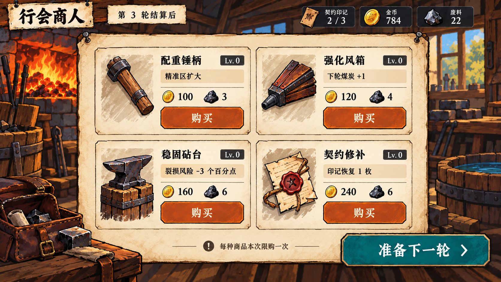
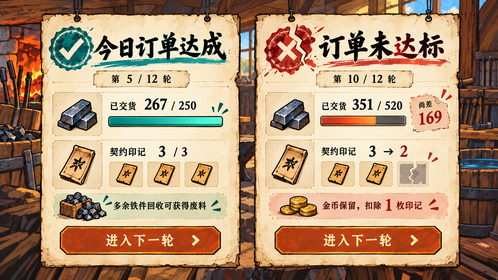
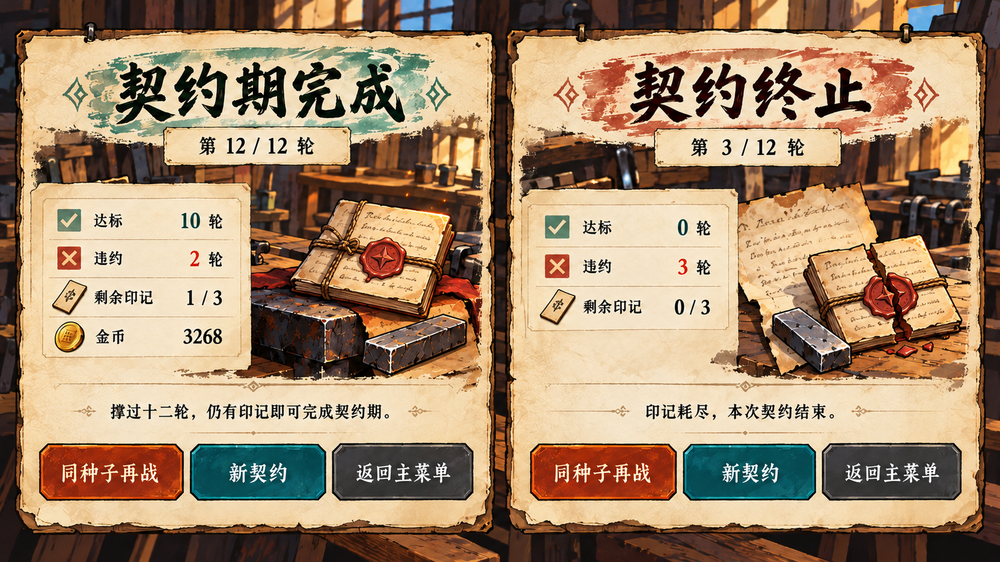

锤下求生 · B 行会手账 · T07
一间可以拼装的手绘工坊
这是美术与状态设计校验页。可调项只改变画面，不读写游戏存档或执行玩法。
正在加载分层素材…
独立背景 / 独立砧台 / 材料图集 / 旋转铁锤 / 代码裂纹与热光
同一铁件的状态层
纹理不替代完整度读数；热、裂纹、碎片和结果字可独立控制。
时机与结果的视觉语汇
精准、普通、偏击是时机；成功、裂损和破碎是结果，两者不能混为一项。
计时条 · B 固定样例，锤柄 1
偏击普通精准普通偏击
裂损风险另列：精准 14% · 普通 20% · 偏击 32%；剩 1 格时，裂损即破碎。
24 帧材料矩阵
每行一个阶级，每列一种材料。矩形采用实测行带，下面显示的是实际运行 WebP。
熟铁精钢陨铁
读数、印记与配色
契契约印记：纸牌与数字煤煤：深色矿块与文字
✓ 精准 / 达标! 裂损 / 违约
标题采用系统中文衬线，正文采用系统无衬线；不加载外部字体。橙色 ember 用于热光，不用于小字。
商人、日终与终局设计稿
数字和按钮在正式界面中由 DOM 渲染；这些是版式与美术参考。



商人器具的透明叠放